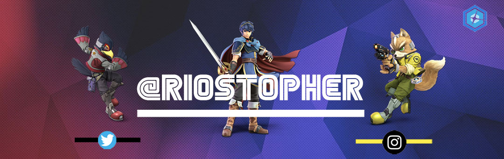

Welcome To My Website
Artist Statement
I intended to become a artist who did animation and create my own character designs; things changed. As someone who grew up playing video games most of the time, I created fond memories of these inspiring stories making it obvious to choose art as a major. I knew that video is a story in itself as it guided the viewer through sections creating memories that stay with you.
As a huge advocate for video art I wanted to develop storytelling through new media such as video games and video. Video games along with video art allows the audience experience new media in a way using contemporary art in media to express an artist’s view in the digital age. My ultimate goal is to have people see video art and video games as the future since I believe storytelling and immersion of emotion is powerful in ways physical art cannot achieve. I want to be the person who can tell a story with these tools, which is why I am here to tell my stories through my mediums.


Here is collection of projects I have done ranging from video game prototypes to Digital banners for social media. These projects demonstrate my skill to use softwares from photoshop and coding.